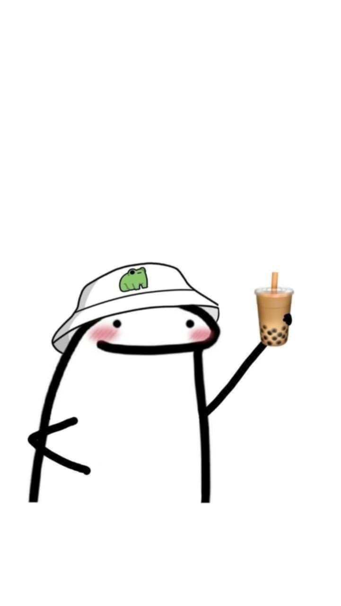

Click the Audio for Music
Your browser does not support the audio element.
Hi Ako si Jhoana, Luh
May gusto sana ako sabihin sayo
Tap yes to read.
Yes
No
 Free Choice.
oks lng
Back to home page
Yes
No